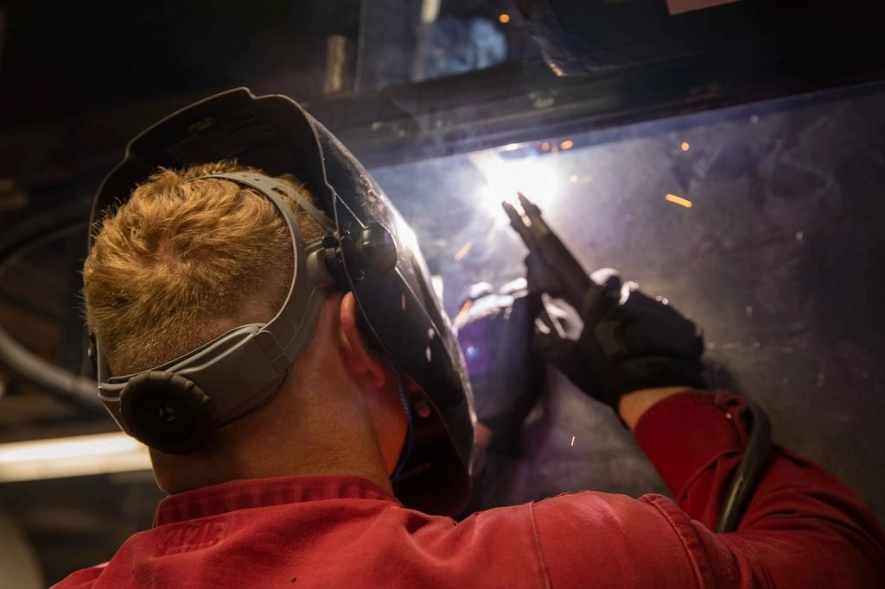

Rockwell Hoisto Cranes / Bahadurgarh
At a glance
A leading manufacturing and fabrication company engaged in designing, manufacturing, erecting and commissioning material handling equipment.
Established in 1985
Material handling & lifting equipment.
Rockwell Hoisto Cranes (P) Ltd. is a leading manufacturing and fabrication company engaged in designing, manufacturing and erecting & commissioning of material handling equipment — E.O.T. cranes, H.O.T. cranes, electric wire rope hoists, gantry cranes, sluice gates and lifts.
Our manufacturing and fabricating units are equipped with state of the art machinery and testing instruments and are run by highly qualified and professional staff with rich experience in this field. We have to our credit more than 1,500 installations of the said material handling equipment.
Established in 1985, we are now capable of manufacturing overhead cranes up to a capacity of 150 tonnes. Our clientele includes the power sector, steel plants, railways, the automobile sector, electricity boards, coal fields, metallurgical plants and defence establishments.
From time to time our equipment is inspected and passed by agencies such as:
RITES EPIL EIL DGS & D M. N. Dastur MECON DNV SPG Consultants TNV

Third party inspection
Inspection agencies
From time to time our equipment is inspected and passed by agencies such as:
Product range
Material handling & lifting equipment
- Gates
- Draft tube gates with stop log gate
- Sluice gate with emergency gate
- Construction sluice gates
- Irrigation sluice gates
- Construction cum irrigation sluice gates
- Penstock gate with emergency gate
- Fore way gate
- Bulk head gates
- Diversion tunnel gate
- Head regulator gate
- Gate hoists
- Hoisting bridges
- Embedded parts, all stages
- Gantry cranes for sluice gates
- Gate lifting electric wire rope hoists
- H.O.T. and E.O.T. cranes — single and double girder
- Under slung and jib cranes
- Goliath cranes
- Goods, hospital, industrial and car lifts
- Manual and electric winches